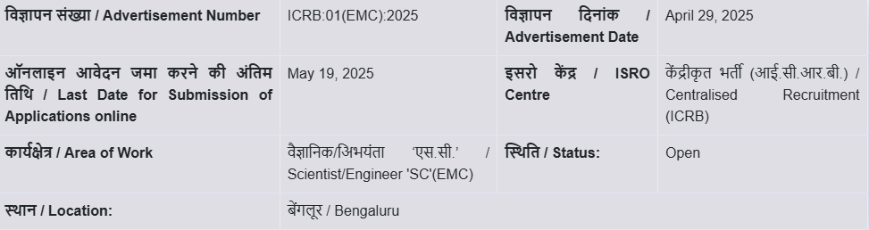

<!DOCTYPE html>
<html lang="en">
<head>
    <meta charset="UTF-8">
    <meta name="viewport" content="width=device-width, initial-scale=1.0">
    <title>Carrier</title>
    <link rel="stylesheet" href="style.css">
</head>

</html>
    <style>
        td,th{
            padding: 10px;
        }
body{
    background-color: rgb(225, 225, 230);
}
    </style>
    <body>
        <header>

        <div id="header1" >
            
            <h2>Government <br> &nbsp;&nbsp;&nbsp;&nbsp;&nbsp;&nbsp;&nbsp;of <br>&nbsp;&nbsp;&nbsp;&nbsp;&nbsp;India</h2>

        </div>
       
        <div id="header2" style="color: white;">
            <span>  &nbsp;&nbsp;&nbsp;&nbsp; &nbsp;&nbsp;&nbsp;&nbsp; &nbsp;&nbsp;&nbsp;&nbsp; &nbsp;&nbsp;भारतीय अंतरिक्ष अनुसंधान संगठन</span>
            <p  style="font-size: 30px;">Indian Space Research Organisation </p>
            
        
        </div>
        <div id="header3" style="width:33%;">
            <nav>
                <a href="index.html">Home&nbsp;&nbsp;&nbsp;&nbsp;&nbsp;&nbsp;</a>
               <a href="explore.html">Explore&nbsp;&nbsp;&nbsp;&nbsp;&nbsp;&nbsp;</a>
               <a href="about.html">About&nbsp;&nbsp;&nbsp;&nbsp;&nbsp;&nbsp;</a>
               <a href="carrier.html">Career&nbsp;&nbsp;&nbsp;&nbsp;&nbsp;&nbsp;</a>
           </nav>
        </div>
        
    </header> 
   <br>
        <br>
        
        <center><h1 style="color:darkblue">CAREER OPPORTUNITIES AT ISRO</h1><br>
        <p style="font-size: 21px;">Come, become a part of the workforce of the nation's prestigious space agency-be it in the technical or administrative areas.<br> ISRO has several openings for recruitment to a plethora of posts.<br> All recruitment notices will be published here.
<br>
<br>
<b style="color: darkblue;">How to Apply : </b>
 Check the official ISRO website (isro.gov.in) for current openings and application procedures.<br>
Apply online through the ISRO website or other specified portals</p><br><br></center><br>

<center><h2 style="color:darkblue">Recruitment to the post of Scientist/Engineer 'SC' in the disciplines</h2><br><br><br></center><br><br>
<center><br>
<h2 style="color:darkblue">Opportunities</h2><br><center><h5 style="color:rgb(37, 45, 54)">DOS offers the career opportunities in various fields of specialization and qualifications.
<br>
    <br>
    Some of the major job opportunities are listed below. This list indicates the opportunities provided so far. Opportunities may get opened for other disciplines.</h5></center>
<br>
        <table border="1" style="border-collapse:collapse" cellpadding:20px;>
        <tr><th>Slno</th>
            <th>Post</th>
            <th>Advertisement Number</th>
            <th>Opening Date</th>
            <th>Last Date of Submission</th>
        </tr>
        <tr><td>1</td>
        <td>Recruitment to the post of Scientist/Engineer 'SC' in the disciplines<br> of Civil, Electrical, Refrigeration & Air-conditioning and Architecture</td>
    <td>ISRO:ICRB:03(CEPO):2025</td>
<td>June 24, 2025</td>
<td>July 14, 2025</td></tr>
<tr><td>2</td>
        <td>
Recruitment to the post of Scientist/Engineer 'SC' in the disciplines <br>of Electronics, Mechanical and Computer Science</td>
    <td>ISRO:ICRB:02(EMC):2025</td>
<td>May 27, 2025</td>
<td>June 16, 2025</td></tr>
<tr><td>3</td>
        <td>

Recruitment to the post of Scientist/Engineer 'SC' in the disciplines <br>of Electronics, Mechanical and Computer Science</td>
    <td>ISRO:ICRB:01(EMC):2025</td>
<td>April 29, 2025</td>
<td>May 19, 2025</td></tr>
        </table></center>

        <br><br>
        <center><h2 style="color:darkblue">INTERNSHIP&nbsp;&nbsp;SCHEME</h2></center>
            <p><ul><li>Internship opportunity shall be extended for UG/ PG/ PhD students (a Citizen of India) pursuing from a recognized University/ Institution (India/Abroad) in the disciplines of Science/Technology or have completed within six months of the application.
            </li><br>
            <li>The duration of the Internship work will be a maximum period of 45 days.</li><br>
            <li>The student should possess an aggregate of a minimum of 60% or a CGPA of 6.32 on a scale of 10.</li><br></ul>
            </p>


        <br><br>


    <footer>
        <div id="footer1">
           <p style="font-size: 24px;">Useful Links</p>
           <p style="font-size: 24px;">Government Portals</p>
           <p style="font-size: 24px;">Reports</p>
           <p style="font-size: 24px;">Policies</p>

        </div>
        <div id="footer2">
            <div id="f21">
                <h2>Indian Space Research Organisation</h2>
                <p>"Reaching for the stars, shaping India’s future. 🚀<br>ISRO: Where innovation meets the infinite sky."</p>
                <p style="font-size: 19px;">About ISRO's Missions</p>
                <p style="font-size: 19px;">Join Us</p>

            </div>
             
            <div  id="f22">
                <p>Home</p>
                <p>Multimedia</p>
                <p>News&Events</p>
                <p>Missions</p>
                <p>Feedback</p>

            </div>

            <div  id="f23">
                <p>Humans in space</p>
                <p>Earth</p>
                <p>Solar System </p>
                <p>The Universe</p>
                <p>Science</p>

            </div>

            <div  id="f24">
                <p>Aeronautics</p>
                <p>Technology</p>
                <p>Learning Resources</p>
                <p>About ISRO</p>
                <p>ISRO in Esponal</p>

            </div>

            <div  id="f25">
                <div id="l1">
                    <h4>Follow ISRO</h4>
                </div id="l2">
                

                

                
                

            </div>
            <hr>
            <div id="f26">
                <p> &nbsp;&nbsp;&nbsp;&nbsp;&nbsp;&nbsp;&nbsp;&nbsp;Contact<br>ISRO Headquarters, Antariksh Bhavan,<br> New BEL Road Bengaluru-560 094<br>Phone: +91 80 22172294 / 96<br>Email: isropr&#64;isro.gov.in</p>
                <p>&#169;Copyright 2023 ISRO. All Rights Reserved Designed by CITG/MSA VSSC/ISRO</p>
            </div>

        </div>
        <br>
       
       
       

        

    </footer>

    </body>
</html>